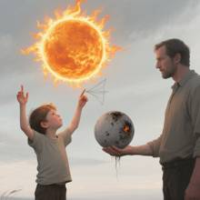
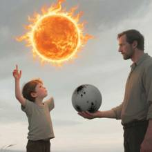
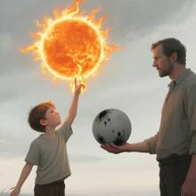
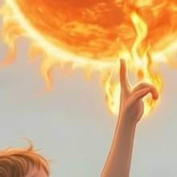
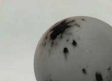

Relationship — A child drew a floating, burning sun in the air with his fingers, whil
A child drew a floating, burning sun in the air with his fingers, while an adult next to him held a cold, extinguished model of the sun.

Judge — Direct
- FAILRelationship - Comparison — The image displays a comparison between a stylized, burning sun drawn in the air and a spherical model of a sun held by an adult. However, the prompt specifies a 'cold, extinguished model of the sun,' but the model in the image is glowing with orange and yellow light, which contradicts the 'cold, extinguished' attribute.
- PASSAction - Hand (Character/Anthropomorphic) — The image shows a child with his right hand raised, pointing his index finger upwards towards the drawn sun, consistent with the action of drawing with a finger. The child's hand is clearly visible and correctly formed. The adult is seen holding the wooden base of the sun model with both hands, which are also depicted without any structural issues.
- FAILAction - State — A stylized sun is depicted 'floating' in the blue sky. It is bright yellow and orange with fiery rays, visually representing a 'burning' state. The model of the sun held by the adult is glowing brightly, not 'extinguished' as described in the prompt.
- PASSCompound - Imagination — The image depicts an imaginative scene where a child's drawing of a sun is shown as a physical, floating object in the air, which is an impossible event in reality.
Judge — Continuum
- PASSRelationship - Comparison — The image presents a clear comparison between two spherical objects. One is a large, luminous, orange and yellow sphere resembling a burning sun. The other is a dark, grey and black sphere held in the adult's hand, which looks like a cold, extinguished version.
- PASSAction - Hand (Character/Anthropomorphic) — The image shows a child with his right arm raised, pointing his index finger towards the burning sun, which aligns with the action of drawing or conjuring with a finger. The child's hand is depicted with normal structure. The adult is shown holding the dark sphere in the palm of his left hand, which also appears structurally normal.
- PASSAction - State — The image depicts a large, sun-like sphere that is 'floating' in the sky. This sphere is colored with bright oranges and yellows and has flares, visually representing a 'burning' state. The sphere held by the adult is dark, with grey and black patches, and lacks any luminosity, fitting the description of 'extinguished'.
- PASSCompound - Imagination — The image visualizes an impossible, imaginative scene where a child appears to be creating or interacting with a burning sun that is floating in mid-air simply by using his finger.
What the agent did
Thinking
I need to investigate this further. Let me confirm the details. Let me think about this prompt. It's a symbolic/artistic scene: a child is using his fingers to draw/shape a floating, blazing sun in the air, while an adult next to him is holding a cold, extinguished model of the sun. So this is a surreal/metaphorical image. I should generate it with qwen-image. I need to think about the visual details: - A child (probably around 5–7 years old) with both hands raised, fingers spread, shaping/controlling a glowing, blazing sun floating in the air near his hands - The sun is fiery, with flames, orange and yellow, radiating light - The adult standing next to him is holding a model of the sun that is gray/cold/extinguished — maybe a sphere that looks like a model of the sun (with craters or a textured solar surface) but dark, dull, ashen, extinguished - The contrast between the child's vivid warmth and the adult's coldness - Setting: probably a simple background — a sky, or maybe an indoor/outdoor scene. Could be a field or a twilight sky. Let me write a detailed prompt: "A surreal emotional illustration: a young boy of about 6 years old with both hands raised, fingers spread, shaping and conjuring a large floating blazing sun in the air in front of him, the sun crackling with orange and golden flames, bright light spilling onto the boy's face and hands; standing next to him, an adult man holds in his outstretched hand a dark, ashen, extinguished model of the sun — a dull gray sphere with a mottled surface, cold and lifeless; a strong contrast of warm light and cold gray, cinematic lighting, dreamlike metaphorical artwork, a clear twilight sky background" Size: probably 1024x1024 by default, or something like 1024 wide × 768 tall? The harness controls the size — "size and seed are controlled by the harness," so I shouldn't set the size? It says the size is controlled by the harness, so I shouldn't set width/height. Actually, the note says "do not set a seed. Size and seed are controlled by the harness." So use the default 1024x1024. After that, check, and if necessary, edit. Alright, let's generate.
Step 1 — `generate_image`
{
"model": "qwen-image",
"prompt": "Surreal conceptual artwork. A young child, about six years old, stands with both arms raised, fingers spread, and with his fingertips he is drawing and holding aloft a large floating burning sun in the air in front of him. The sun is alive with orange and golden fire, flames licking from its edge, bright warm light radiating and illuminating the child's face, hands and hair. Standing right next to him, an adult man holds in one outstretched, limp hand a model of the sun: a dull gray, ashen, extinguished sphere with a mottled scorched surface, cold and lifeless, no light coming from it. Strong contrast between the blazing warm sun of the child and the dead cold gray sun of the adult. Soft overcast sky background, dreamy symbolic mood, cinematic lighting, detailed illustration style."
}Result img_0

Thinking
The image is mostly good: a boy reaching up with his fingers toward a blazing burning sun floating in the air, and a man holding a gray, scorched, extinguished sun-model that still has a bit of embers/flickering flame remaining on it. Issues: 1. The prompt says the child is "drawing a floating, burning sun in the air with his fingers" — the boy's hands are raised toward the sun, but they don't appear to be touching it or drawing it. There's a weird artifact between the boy's outstretched finger and the sun — a strange geometric wireframe object (like a distorted kite or wireframe fan). This is an artifact that should be removed. 2. The extinguished sun still has an orange glowing ember spot on it — it's supposed to be completely cold and extinguished. This ember spot undermines the "cold, extinguished" look. It should be made fully gray/ashen, with only a faint cool tint at most. Let me first mark this as the best, then edit: - Edit 1: Remove the wireframe artifact near the boy's outstretched hand. - Edit 2: Make the ember spot on the gray ball completely extinguished — a dull dark ashen gray. Following the multi-step discipline, I'll do one edit per call. Let me mark the best first, then edit. Actually, let me do the edits one at a time. First, remove the wireframe artifact. Use edit_image with a targeted instruction: "Remove the thin wireframe fan-shaped object floating between the boy's outstretched hand and the sun. Smooth it away so that only the clear sky remains." Next: "Make the sunball the man is holding completely cold and extinguished: remove the orange glowing ember spot on the surface, leaving only dull dark gray ash." Then inspect the result and re-mark the best.
Model
The overall composition is working well — the boy is reaching his fingers out toward the blazing sun, and the man is holding the gray, scorched sun model. There are two defects that need fixing: a thin wireframe-like artifact between the boy's outstretched finger and the sun, and the ember (residual fire) spots that are still glowing on the "extinguished" model. First, let me mark this as the best, then I'll fix them one at a time.
Step 2 — `mark_best`
{
"image": "img_0",
"reason": "Composition matches the prompt well: child drawing a burning sun with his fingers, adult holding extinguished sun model. Two minor flaws: wireframe artifact near child's hand, ember spot on the gray sphere."
}Thinking
Alright, let's fix the wireframe artifact.
Step 3 — `edit_image`
{
"image": "img_0",
"model": "qwen-image",
"prompt": "Remove the thin gray wireframe fan-shaped object floating in the air between the boy's outstretched pointing finger and the burning sun. That area should be clear open sky with soft clouds, exactly like the surrounding sky. Keep everything else unchanged."
}Result img_1
Thinking
The wireframe artifact has been removed. However, the boy's other arm (the one that was pointing up) has been lost — the left arm that was raised with the index finger pointing is still there, but the right arm has been lowered and bent (bent at the elbow). Actually, looking closely: in img_0 the boy had both arms raised — the left arm raised high with the index finger extended, and the right arm extended toward the sun with a pointing finger. In img_1, only the left arm is raised and pointing, and the right arm is lowered. Hmm, so the edit changed the pose of the arm that had been pointing toward the sun. Actually, in img_0 the boy's right arm was extended upward toward the wireframe/sun, and now it's bent and lowered. The arm's shape has changed — it's now bent at the elbow and looks unnatural (is the forearm pointing down?). Actually, the boy's right arm appears to be bent with the hand hidden near the chest, and it looks somewhat off, but it's not that bad. Hmm, wait, let me look at img_1 once more: the boy's left arm (left side of the image) is raised high with the index finger pointing up. The other arm (right side of the image) is bent at the elbow, with the hand probably near the chest — partially visible behind the body? The sleeve is visible, and the arm is bent. It looks a bit unnatural, but not that noticeable. Remaining issue: the ember spot on the gray ball is still glowing. Also, a dark, smoke-like string is hanging down below the ball (like a smoke trail) — this actually looks like a smoke wisp, which is appropriate for an extinguished sun, and can be seen as intentional. It could be left as is. So let's fix the ember: "Replace the small orange glowing ember on the surface of the gray ball with dull dark gray ash, so that the ball appears completely cold and extinguished, with no glowing spot whatsoever." Also, I could maybe restore the pose of the boy's right arm pointing at the sun. The prompt says "drew a sun floating in the air with his fingers" — one pointing arm is enough to convey that, but two raised arms is better. In img_0 both arms were raised. The edit lost that. I could ask to restore it: "Raise the boy's other arm as well, extending his arm and index finger toward the burning sun." But that might be risky. Let's first fix the ember, then evaluate the arm.
Model
The wireframe artifact has been removed, but the boy's other arm has dropped, and there's still a glowing ember remaining on the ball. Next, I'll fix the ember.
Step 4 — `edit_image`
{
"image": "img_1",
"model": "qwen-image",
"prompt": "On the gray sphere held in the man's hand, remove the small orange glowing ember spot and any orange glow. The sphere's surface should be entirely dull, cold, ashen gray with dark scorched patches \u2014 completely extinguished, no fire, no glow anywhere on it. Keep everything else exactly the same."
}Result img_2

Thinking
The ball is now completely cold, ashen gray with dark scorch marks—no embers, no glow. The wisp of smoke hanging down from the ball is also gone. This is good, actually cleaner. Current state: - Boy: left arm raised, index finger pointing up (toward the sun). Right arm is bent and lowered. In img_0 both arms were up. The current pose still reads as "a child reaching up with his fingers toward the sun"—the raised index finger is pointing right near the sun. Good enough, and I'd say it actually reads better now. - The sun is blazing and floating above and in front of the boy's pointing finger. - The man is holding the dead, cold sphere. One thing that's bothering me: the sun is somewhat higher up and away from the boy's fingertip, so the "drew it with his fingers" connection is slightly weaker than in img_0 where his finger was almost touching it. In img_1/img_2 his raised index finger points toward the sun, with a small gap. This is fine. Let me inspect the details: check whether the boy's bent arm looks weird, and also check the man's hand holding the ball. I'll try zooming into the boy's arm region and the man's hand. Actually, let me look at img_2 once more: the boy's right arm is bent at the elbow, and the hand is… hidden? I can see the sleeve, then the arm bends, and the hand is either in a fist at chest height, or maybe not visible. It looks a bit odd, but it's not a serious flaw—many illustrations show the boy with one arm raised. Hmm, but in img_0 his right arm was extended pointing, which fit "drew with his fingers" better. Tradeoff: img_0 had both arms raised (perfect pose) but had the wireframe artifact and the embers. img_2 is clean, but the pose is slightly weakened. Options: 1. Accept img_2 as is (good enough). 2. Try another edit to raise the boy's other arm and point it at the sun. The prompt says "drew a sun floating in the air with his fingers"—the plural "fingers" suggests he's actively shaping/drawing it with his hand. In img_0 his finger was essentially touching the base of the sun, which conveyed that beautifully. In img_2 the sun is floating well above his fingertip. I think one targeted edit to bring the sun slightly closer to the boy's raised fingertip, or to have him point with both arms, would better match the intent. But there's a risk of degrading further. Let me try one edit: "Move the blazing sun lower, closer to the boy's raised index finger, so his fingertip is almost touching the flames at the bottom edge of the sun." Actually, moving the sun is risky. Alternative: raise the boy's bent arm so it also points up. Let me try: "Raise the boy's other bent arm so it too extends upward toward the blazing sun, finger pointing, as if drawing and holding the sun with his fingers." This restores the original pose. I'll try it on img_2. Actually wait—in img_0 the boy's right arm was extended upward and forward toward the sun, and the left arm was raised high. Let me request exactly that.
Model
The ball is now completely cold and ash-covered — both flaws have been fixed. One small point: in the first version, both of the boy's arms were raised and pointing at the sun (matching the "drew the sun with his fingers" part). In this version, one arm is drooping down. Let me try restoring that pose.
Step 5 — `edit_image`
{
"image": "img_2",
"model": "qwen-image",
"prompt": "Raise the boy's bent lower arm so that both of his arms are now stretched upward toward the burning sun: one arm high with the index finger pointing, the other arm extended forward-upward with the finger nearly touching the flames at the sun's lower edge, as if he is drawing and holding the sun with his fingers. Keep the sun, the man, the gray sphere, the sky and everything else exactly the same."
}Result img_3

Thinking
img_3: The boy's right arm is extended upward, with the index finger touching the bottom of the sun — flames swirling around his fingertip. This makes the "drawing a sun with his fingers" part look great. But now only one arm is raised (the other arm is lowered to the side of his body). In img_0, both arms were raised. Comparison: - img_0: Both arms raised, one finger almost touching the sun — but the wireframe artifact + ember (residual fire) spots. - img_3: One arm raised, finger touching the sun with flames — clean, no artifacts, and the ball is completely extinguished. The other arm is lowered, which is a natural pose. Which is better? img_3's composition: the boy's finger touching the sun's flame is a strong focal point, and it clearly conveys the idea that the sun was drawn by his fingers. The lowered arm looks natural (like a child standing). I think img_3 is overall better than img_0 (no defects), and better than img_2 (the connection with the fingers is stronger). Let's inspect img_3's details — check the hand/finger area at the source resolution, and verify that the man's hand holding the ball and the boy's other arm are clean.
Model
The boy's finger is currently touching the sun's flame — that's a powerful moment. Before making a judgment, let me check the hand area at full resolution.
Step 6 — `inspect_region`
{
"image": "img_3",
"roi": [
230,
330,
460,
560
],
"padding": 0.05
}Result img_4

Step 7 — `inspect_region`
{
"image": "img_3",
"roi": [
420,
540,
640,
700
],
"padding": 0.05
}Result img_5

Thinking
Inspection results: - img_4 (the boy's hand at the sun): The hand is clean — index finger extended touching the flame, the other fingers naturally curled. No extra fingers or artifacts. Looks good. - img_5 (the gray sphere): A mottled, ashen-gray surface with dark scorched marks, cold, no glow. Good. img_3 is clean, and all the elements of the prompt are in place: 1. A child drawing with his fingers a sun that is floating and burning in the sky ✓ (finger touching the flame, the sun is floating) 2. An adult next to him ✓ 3. Holding a cold, extinguished model of the sun ✓ (a mottled gray sphere, no glow, held in the open palm) Mark img_3 as the best. This is a strong result — stop here. Good-enough is a stop condition.
Model
Both details are clean: the boy's hand is natural, with the index finger touching the flame, and the sphere is completely ashen and cold, with no glow. All the elements of the prompt are in place — the child drawing the blazing, floating sun with his finger, and the adult beside him holding the extinguished, mottled gray sun model.
Step 8 — `mark_best`
{
"image": "img_3",
"reason": "Final version: no artifacts, boy's finger touching the burning floating sun's flames, adult holding a fully cold extinguished gray sun sphere. All prompt elements present and clean at source resolution."
}Thinking
Complete. img_3 is marked as the best. Summarizing for the user.
Model
The final image is marked and ready. It captures the contrast at the heart of the prompt: - **The child** stands on the left, one arm stretched high, his index finger touching the flames of a large burning sun that floats in the sky — as if he drew and is holding it there with his fingertip, warm light glowing on his face. - **The adult** stands beside him in profile, calmly offering a sun model in his open palm: a dull, mottled, ashen-gray sphere, completely cold and extinguished, with scorched patches and no light. - The overcast sky keeps the focus on the warm-vs-cold contrast between the two suns. Along the way I removed a wireframe artifact near the boy's hand, extinguished a lingering ember glow on the model, and raised the boy's arm so his finger visibly connects with the burning sun.